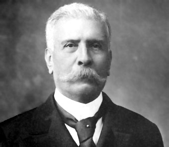

La batalla de Puebla fue un combate librado el 5 de mayo de 1862 en las cercanías de la ciudad de Puebla, entre los ejércitos de la República Mexicana, bajo el mando de Ignacio Zaragoza, y del Segundo Imperio francés, dirigido por Charles Ferdinand Latrille, conde de Lorencez, durante la Segunda Intervención Francesa en México, cuyo resultado fue una victoria importante para los mexicanos ya que con unas fuerzas consideradas como inferiores lograron vencer a uno de los ejércitos más experimentados y respetados de su época. Pese a su éxito, la batalla no impidió la invasión del país, aunque sí que sería la primera batalla de una guerra que finalmente México ganaría. Los franceses regresarían al siguiente año, con lo que se libró una segunda batalla en Puebla en la que se enfrentaron 35 000 franceses contra 29 000 mexicanos (defensa que duró 62 días) y lograrían avanzar hasta la Ciudad de México, lo que permitió establecer el Segundo Imperio Mexicano. Finalmente, ante la incapacidad de consolidar un imperio, y después de perder 11 000 hombres debido a la actividad guerrillera que nunca dejó de subsistir,2 los franceses se retiraron incondicionalmente del país en el año 1867.

La victoria inesperada La mañana del 5 de mayo de 1862 comenzó en Puebla (centro de México) una batalla en la que el ejército mexicano (unos 2.000 soldados y unos 2.700 civiles armados) se enfrentó a las fuerzas armadas francesas, unas de las más experimentadas del planeta en ese momento histórico, pero con estrategias no adaptadas al terreno. El Ejército galo había avanzado en los últimos cuatro meses desde las costas de Veracruz con la intención de invadir México, tras el incumplimiento del pago de 80 millones de dólares en deuda. La batalla de Puebla duró todo el día y los mexicanos resultaron vencedores, por primera vez desde que los franceses habían entrado al territorio. "Las armas nacionales se han cubierto de gloria. Las tropas francesas se portaron con valor en el combate y su jefe con soberbia, necedad y torpeza", escribió el hombre al frente de las tropas mexicanas: el general Ignacio Zaragoza.
Entre diciembre de 1861 y enero de 1862 las flotas armadas de España, Francia e Inglaterra, desembarcaron en Veracruz para ocupar las aduanas, presionar al gobierno mexicano y recuperar sus capitales. Los representantes de España e Inglaterra, el general Juan Prim y el embajador Charles Wyke, aceptaron negociar y llegar a un entendimiento con el ministro del exterior Manuel Doblado por lo que reembarcaron sus tropas y regresaron a sus países; no así el francés que exigió el pago inmediato de la deuda y Charles Ferdinand Latrille Conde de Lorencez siguiendo la consigna de Napoleón III, continuó con los planes de establecer una monarquía en México. Esto provocó la ruptura de la alianza tripartita y el incumplimiento de los ‘Tratados preliminares de La Soledad’; con lo que da inicio al conflicto armado entre México y Francia siendo el 19 de abril de 1862 cuando se realizan los primeros disparos en El Fortín en Veracruz. Los franceses y mexicanos conservadores establecieron un simulacro de gobierno en Orizaba, Veracruz encabezado por el general Juan Nepomuceno Almonte para que los representara. En respuesta, Benito Juárez expidió un decreto declarando traidores a los mexicanos que colaboraran con los franceses e hizo un llamado a tomar las armas, autorizando a los gobernadores de los estados a realizar acciones al respecto y les pidió que enviaran contingentes militares con los que formó el Ejército de Oriente, logrando reunir cerca de 10 mil hombres, cuyos grupos cargaron sus propias insignias y pertrechos hasta Puebla para fortificarla.
En octubre de 1861, Francia, Inglaterra y España firmaron la Convención de Londres, en la cual se comprometieron a enviar contingentes militares a México, la deuda era de 80 millones de pesos; 69 millones para los ingleses, 9 millones para los españoles y 2 millones para Francia. La Alianza Tripartita amenazó al presidente Benito Juárez con invadir el país si no se saldaba por completo las deudas con los tres países europeos. Juárez responde con un exhorto para lograr un arreglo amistoso, en un principio la Alianza Tripartita aceptó el llamado al diálogo. Sus representantes se reunieron con Manuel Doblado, ministro de Relaciones Exteriores, quien consiguió que Juan Prim, representante español, y Lord John Russell por Inglaterra se retiraran; lograron negociar por la vía diplomática los términos y condiciones en los que se pagaría posteriormente la deuda. Es entonces cuando Juárez creo al Ejército de Oriente y designó al general Ignacio Zaragoza al frente de este. El 5 de marzo, cuando aún se realizaban las negociaciones, llegó a Veracruz un contingente militar francés bajo el mando de Charles Ferdinand Latrille, conde de Lorencez. A finales de abril, Lorencez se puso en marcha, junto con sus efectivos, hacia Puebla, con el fin de avanzar para conquistar la Ciudad de México.
Museo Interactivo de la Batalla del 5 de Mayo
Dirección
Av. Ejercito de Oriente s/n, Calle Laureles S/N Unidad Cívica 5 de Mayo. Los Fuertes, 72260 Puebla, Pue.
Horario
Martes a domingo 10:00 a 18:00 hrs. Días festivos 10:00-17:00 hrs.
Costo
Entrada libre
Contacto
zaragoza@5demayopuebla.mx
Puebla fue un punto clave para la historia del país, por lo que este museo interactivo revive de forma didáctica la batalla del 5 de Mayo de 1862 en la zona de Los Fuertes, el mismo escenario donde se desarrollaron estos hechos.
El interactivo narra las acciones militares y contiene las biografías de héroes nacionales como Ignacio Zaragoza, a través de pantallas táctiles, proyecciones en 3-D y contenidos interactivos descargables en dispositivos.
Este espacio está dotado de tres salas que detallan la riqueza histórica de Puebla, que te transportan a los lugares donde la batalla se llevó a cabo.

Por lo que sus principales participantes fueron sus dirigentes al mando de los ejércitos oponentes, Ignacio Zaragoza por México y Charles Ferdinand Latrille conde de Lorencez por Francia.
Algunos actores precedentes fueron los contingentes militares europeos, que en 1861, Francia, Inglaterra y España, suscribieron en la Convención de Londres, comprometidos a enviar a México para reclamar sus derechos como acreedores por una deuda repartida entre estos tres países. Este contingente estaba compuesto y dirigido por los siguientes hombres:
– Del Reino Unido: 700 marines bajo el mando del Comodoro Dunlop.
– De España: 6000 hombres dirigidos por el General Juan Prim.
– De Francia: 3000 hombres dirigidos por el Contraalmirante Jurien de la Gravière.
Primeros años[editar] Fue hijo del vasco Juan José Berriozábal y de la mexicana Soledad Basabe. Realizó sus estudios profesionales en la Escuela Nacional de Ingenieros, los cuales tuvo que interrumpir en 1847 para combatir la Intervención estadounidense en México. En 1849 se graduó como ingeniero, realizó el proyecto hidráulico de canalización del Río Lerma. Durante la Revolución de Ayutla participó con los liberales, bajo las órdenes del general Plutarco González. Durante la Guerra de Reforma, el general Santos Degollado lo nombró coronel de caballería auxiliar y más tarde ascendió a general de brigada. Durante la Guerra de Reforma, participó en la Batalla de Salamanca, en la Batalla de Tacubaya, en los enfrentamientos de Temascaltepec y Yuriria. Actuó bajo las órdenes del general Ignacio Zaragoza al confrontar y derrotar a Leonardo Márquez en las Lomas de Calderón, pero fue hecho prisionero por Miguel Miramón en diciembre de 1860.1 En 1862, participó en la defensa del Convento de San Agustín, en la Batalla de Las Cumbres, y en la Batalla de Puebla. En 1863, fue hecho prisionero por los franceses, logró fugarse uniéndose al presidente Benito Juárez, quien lo designó en 1865 como Ministro de la Guerra.

José de la Cruz Porfirio Díaz Mori1, conocido como Porfirio Díaz (Oaxaca de Juárez, Oaxaca, 15 de septiembre de 1830 - París, Francia, 2 de julio de 1915), fue un militar mexicano que ejerció el cargo de presidente de México en siete ocasiones. En total ocupó la presidencia de México por 30 años, una extensión sin antecedentes. Ocupó por primera vez la presidencia del país en forma interina tras el triunfo de la Revolución de Tuxtepec, entre el 24 de noviembre de 1876 y el 6 de diciembre de 1876; y por segunda vez del 17 de febrero de 1877 al 5 de mayo de 1877. Volvió a ejercer el cargo en forma interina del 5 de mayo de 1877 al 30 de noviembre de 1880. Posteriormente ejercería la presidencia del país de manera ininterrumpida entre 1884 y 1911.
A pesar de que Jesús González Ortega no era un militar de carrera, como ya se ha dicho fue jefe del ejército del presidente Juárez en 1860. También en marzo de 1861, fue nombrado ministro de Guerra, pero por supuestas diferencias con algunos miembros del gabinete, renunció a este y solo quedó al mando de la división de Zacatecas. Posterior a los asesinatos de Melchor Ocampo, Santos Degollado y Leandro Valle, regresa a la Ciudad de México y es nombrado presidente de la Suprema Corte de Justicia de la Nación, cargo que conllevaba el de vicepresidente de la república. Fue candidato a la presidencia de México en 1861, siendo derrotado por Benito Juárez.
Ignacio Zaragoza nació en el poblado de Bahía del Espíritu Santo, en el estado de Coahuila y Texas, hoy Goliad. Fue el segundo hijo de Miguel Zaragoza Valdés, de Veracruz, y María de Jesús Seguin Martínez, de San Antonio de Béxar, esta última pariente de Juan José Erasmo Seguin. Cuando los rebeldes texanos, apoyados por los Estados Unidos de América, ganaron la Guerra de independencia de Texas, Miguel Zaragoza, que era soldado de infantería, se mudó con su familia desde la ciudad Presidio de La Bahía de Espíritu Santo (hoy Goliad, Texas), donde había nacido su hijo Ignacio, a la ciudad de Matamoros en 1834, y posteriormente, en 1844, a la ciudad de Monterrey, donde Ignacio entró al seminario, estudios que abandonó en 1846, convencido de que no tenía vocación sacerdotal.


 1
1 2
2 3
3